Build AI-first business apps that turn dashboards into actions
Official description
Business apps are shifting from dashboards and filters to AI-driven experiences. In this session, we show how users can ask questions, get insights, and take action instantly. Using DevExpress components, we demonstrate how structured UI brings AI responses to life, turning data into clear, actionable outcomes.
Summary
Overview
A DevExpress-focused demonstration of embedding AI directly into a Blazor business application rather than bolting a chatbot onto an existing app. Using a .NET command center backed by Azure OpenAI, the session shows AI driving grid interactions through tool calling, built-in report translation, and AI-derived contract risk visualization, with the recurring thesis that AI handles intent while DevExpress controls handle interaction.
Key announcements
- AI-driven DevExpress grid via tool calling (00:00:41
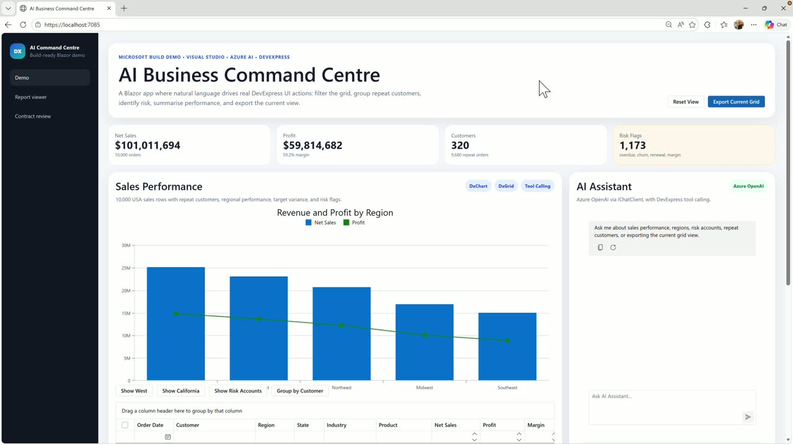
m05sm10s p05sp10s): Natural-language prompts trigger registered C# methods that filter, group, sort, and export against the live grid through the standard DevExpress API.
p05sp10s): Natural-language prompts trigger registered C# methods that filter, group, sort, and export against the live grid through the standard DevExpress API. - Built-in translation in the DevExpress Report Viewer (00:00:46m05s
 m10s
m10s p05s
p05s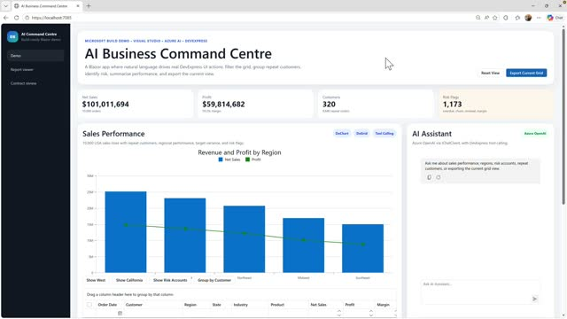
p10s): A French quarterly memo is translated to English by the report viewer itself, with no custom chat UI on the page. - AI contract review with visualized risk (00:00:51
 m05s
m05s m10s
m10s p05s
p05s p10s): Azure OpenAI identifies risky clauses and a DevExpress report renders them with warning tags, red borders, and conditional band coloring.
p10s): Azure OpenAI identifies risky clauses and a DevExpress report renders them with warning tags, red borders, and conditional band coloring.
{kind=link}
{kind=link}
{kind=link}
{kind=link}
{kind=link}
Topics covered
- Connecting AI to controls, data, and workflows instead of adding a standalone chatbot
- Tool-calling architecture: registering approved, screen-scoped capabilities via an AI tools context builder
- Function metadata and descriptions guiding model tool selection
- Configuring keyed chat clients and function invocation in program.cs using .NET user secrets
- Dependency injection of the live grid instance at runtime rather than from the model
- Report viewer AI integration: enabling translation and inline translation for multiple languages
- Custom workflows that inject IChatClient directly, using a system prompt and full document text
- Parsing AI responses to drive conditional report formatting (is-risky state)
- Application structure that keeps the AI layer from "swallowing" the app
Notable quotes
"Think in terms of the AI handles the intent. DevExpress handles the interaction."
"The AI does not get the whole application, simply the approved capabilities that we register here."
"AI creates the state. DevExpress presents the state."
Products and tools mentioned
- DevExpress Blazor controls (DX Grid, DX Chart, DX AI Chat)
- DevExpress Reporting / Report Viewer
- Azure OpenAI
- IChatClient
- Visual Studio
- .NET
- Blazor
- .NET user secrets
- Microsoft Excel (XLSX export)
Speakers featured
- Paul Usher — DevExpress
Frames
{kind=link}
{kind=link}
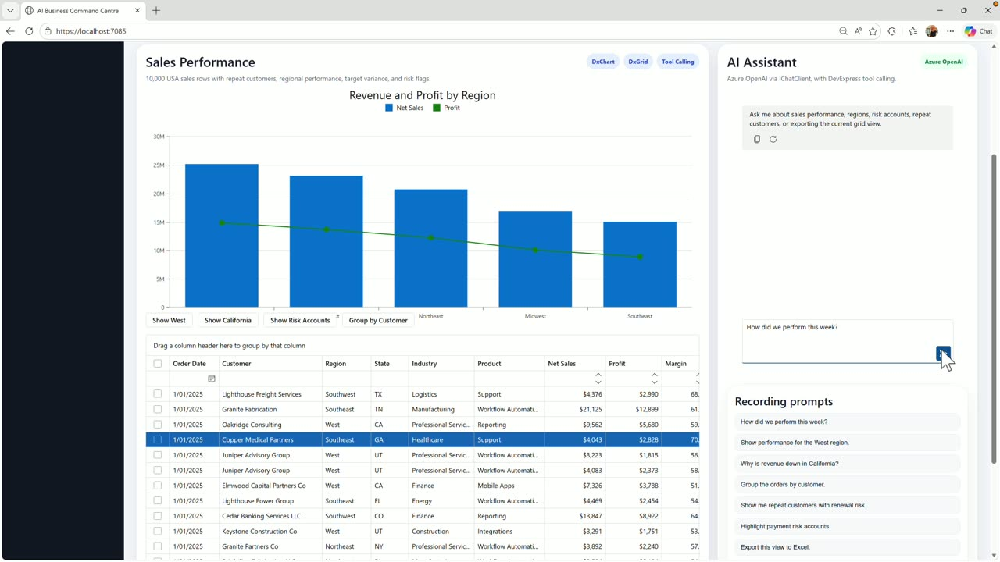
{kind=link}
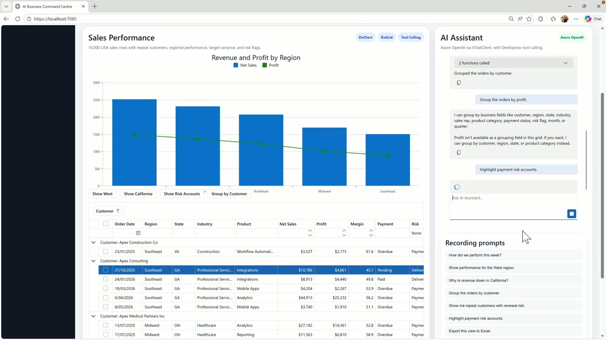
{kind=link}
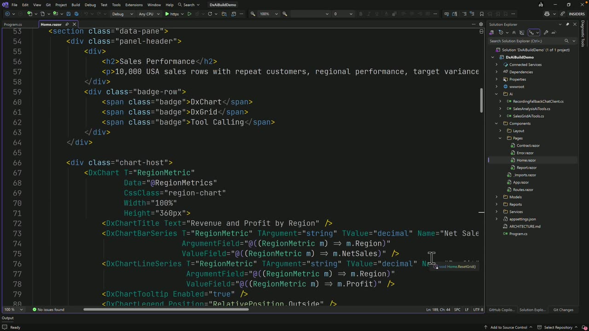
{kind=link}
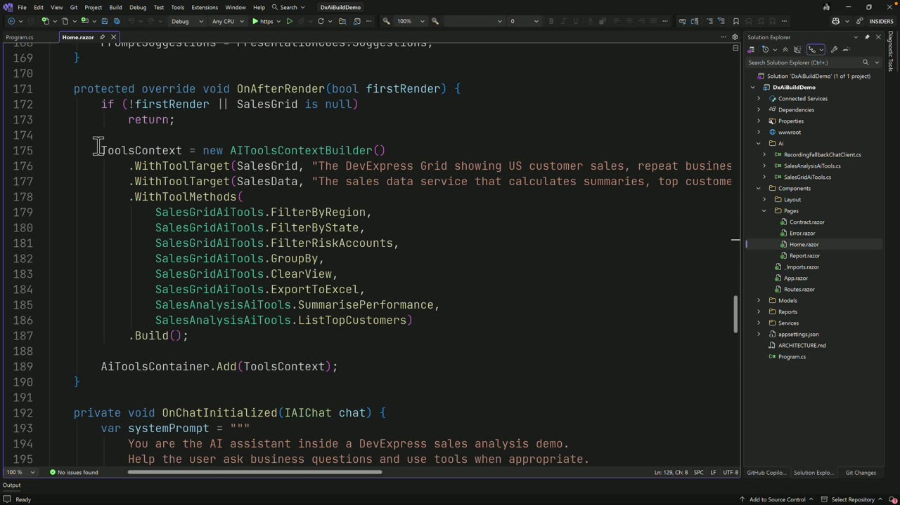
{kind=link}
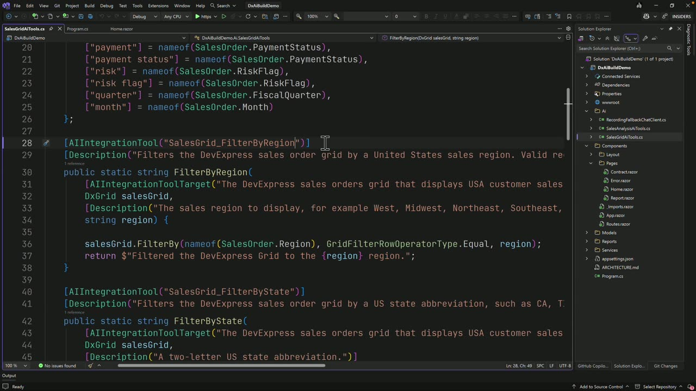
{kind=link}
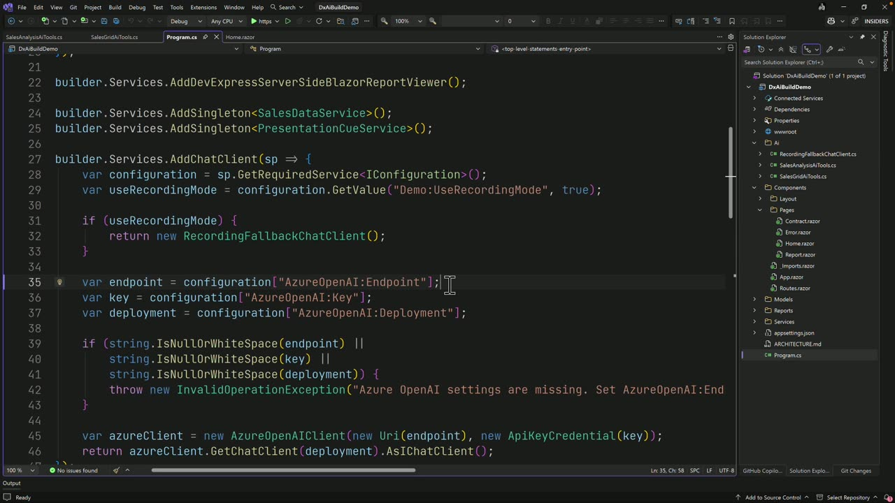
{kind=link}
{kind=link}
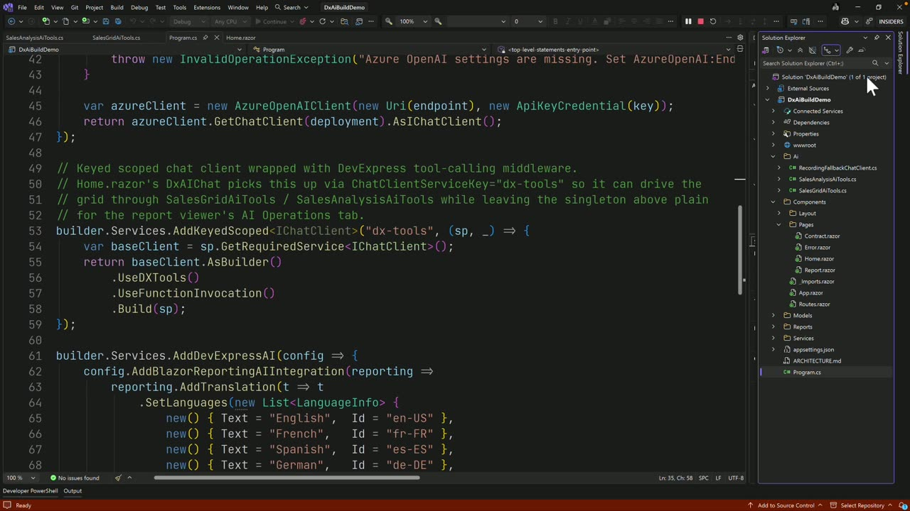
{kind=link}
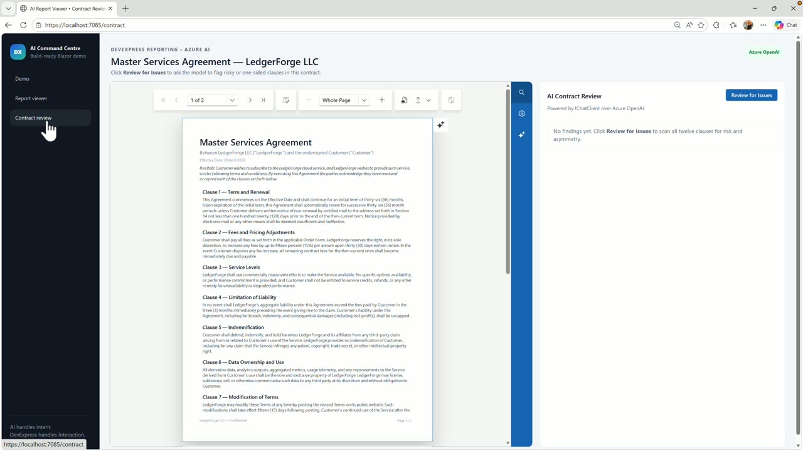
{kind=link}
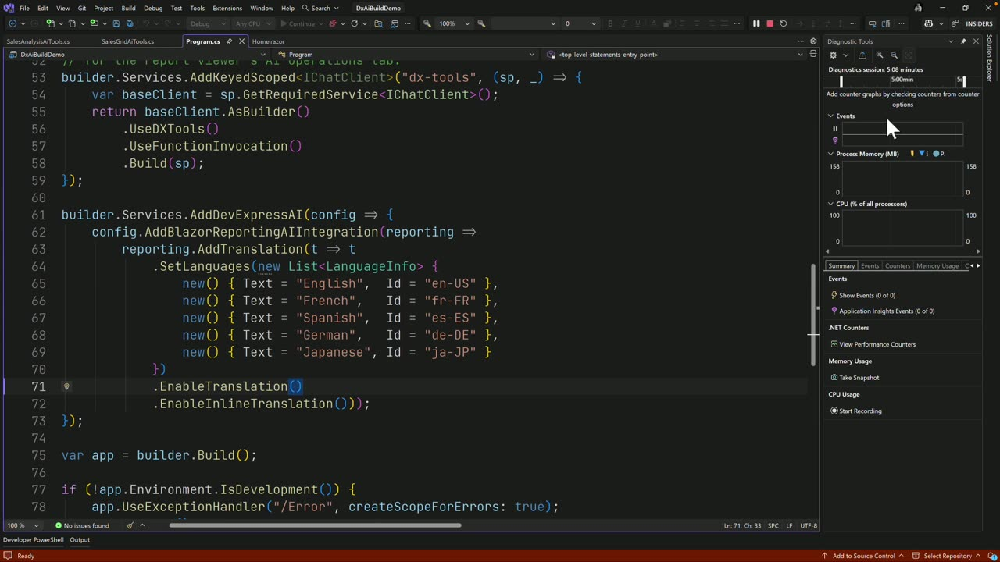
{kind=link}
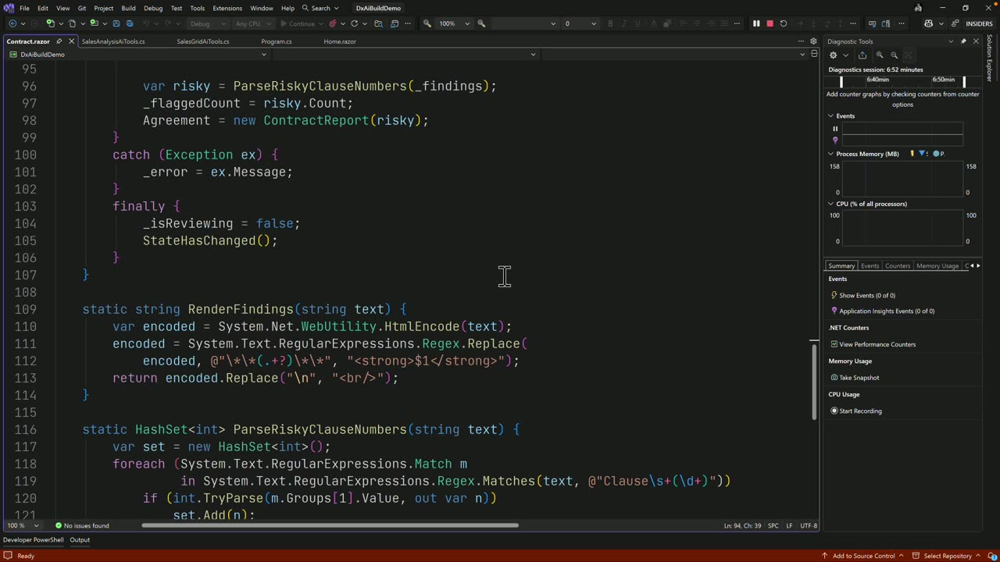
{kind=link}
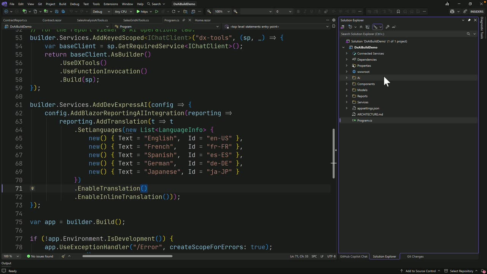
{kind=link}
Transcript
Show / hide transcript (14,806 chars)
[00:00:00] PAUL USHER: Welcome to this Microsoft build 2026 session. [00:00:04] I'm Paul Usher from DevExpress. [00:00:06] Today we're looking at how AI can create a more natural user [00:00:09] experience inside a modern Blazor application. [00:00:13] This is not about generating code and it's not [00:00:15] about dropping a chat bot beside an existing app [00:00:18] and calling it done. [00:00:19] This is about connecting AI to the controls, to the data, [00:00:23] and to the workflows users already rely on. [00:00:27] The demo app is built in Visual Studio using.NET. [00:00:30] DevExpress Blazor controls, DevExpress reporting, [00:00:34] and Azure Open AI through iChat client. [00:00:38] We'll look at three examples. [00:00:41] First how AI drives DevExpress grid using tool calling. [00:00:46] Second AI is built in to the DevExpress report viewer [00:00:49] for translation. [00:00:51] And third Azure Open AI to review a contract [00:00:54] and DevExpress report to visualize the risky clauses. [00:00:58] We have a simple command center here featuring some KPI cards, [00:01:03] a DX chart control, DX grid, [00:01:06] and on the right-hand side DX AI chat. [00:01:10] I've got some prebaked recording prompts. [00:01:13] So we're starting on the main home razor page. [00:01:17] The cell's data is coming from a CSV loaded [00:01:19] through a data service [00:01:21] and a simple method call to get orders. [00:01:24] It's also using a get summary for the KPI cards [00:01:27] and a get region metrics for the chart. [00:01:30] The grid itself is bound [00:01:32] to around 10,000 rows of USA sales data. [00:01:35] Now traditionally users will work with data by filtering, [00:01:39] sorting, grouping, paging, and exporting. [00:01:42] And that still matters and the DevExpress grid is very good [00:01:45] at that. [00:01:46] Let's filter to just Texas. [00:01:51] And then maybe group by region. [00:01:56] Expand. And sort by customer name. [00:02:00] We could also create some buttons that will build [00:02:04] that functionality in. [00:02:07] They only cover the scenarios we thought ahead of time. [00:02:12] So the question is can we give the user a more natural way [00:02:15] to work with this data. [00:02:19] Well, on the right-hand side I've got a DX AI chat control. [00:02:25] And what (inaudible) here is the fact [00:02:26] that the user can ask questions in a more natural language. [00:02:30] For example, how did we perform this week? [00:02:34] The prompt is going to be handled [00:02:36] by the cell's analysis tool. [00:02:38] It can call methods such as summarize performance [00:02:41] which uses a build executive summary method [00:02:44] and produces a concise business summary. [00:02:47] What if we want the chat to actually interact with the grid? [00:02:50] Let's ask, "Group the orders by customer." [00:02:56] And we can see that the grid has now responded [00:02:59] and is grouping the data by customer. [00:03:04] What if I was to actually say instead [00:03:05] of customer group by profit? [00:03:09] And we can see that the code behind has been set [00:03:11] up to allow specific functionality. [00:03:13] The user doesn't just get told no. [00:03:15] It's provided an explanation as to what's going on. [00:03:19] Maybe now I ask it to highlight the payment risk accounts. [00:03:24] And again that grid information is updated. [00:03:27] In the background it's calling a filter risk account method. [00:03:31] Now that I've got that information I want [00:03:34] to export it to Excel. [00:03:36] So just ask export. [00:03:40] And we can see now that a download's been created [00:03:44] with an Excel SX file. [00:03:47] This is the difference between a chat answer [00:03:49] and an application assistant. [00:03:51] The AI is not telling the user how to export. [00:03:54] It's triggering the exports for a controlled DevExpress API. [00:03:58] Think in terms of the AI handles the intent. [00:04:01] DevExpress handles the interaction. [00:04:05] Jumping in to Visual Studio we'll take a peek [00:04:07] inside home.razor. [00:04:11] First thing we want to do is find the chat control. [00:04:17] This is the DX AI chat control for the page. [00:04:20] The important setting is the chat client service key equals [00:04:23] DX tools. [00:04:25] This is telling the chat control [00:04:26] to use the tool enabled AI client [00:04:28] that we register in program.CS. [00:04:31] I've said include function calling for to true [00:04:34] so the demo can show the calls the tool actually makes. [00:04:37] Typically in production you'd set it to false. [00:04:42] Now if we scroll down to the [00:04:43] on after render we can see the creation [00:04:49] of a new AI tools context builder. [00:04:52] And this context registers two live targets, [00:04:55] the actual DX grid instance and the cell's data service. [00:05:00] Then it registers the methods that the AI is allowed to call. [00:05:03] Filter by region. [00:05:04] Filter by state. [00:05:05] Filter risk accounts. [00:05:07] Group by. Clear view. [00:05:09] Export. Summarize. [00:05:10] And list top customers. [00:05:13] Think of this as the toolbox for the current screen. [00:05:16] The AI does not get the whole application, [00:05:19] simply the approved capabilities that we register here. [00:05:23] And we can see at the bottom of the method the context is added [00:05:26] to the AI tools container which makes it available [00:05:29] to the DevExpress tool calling pipeline. [00:05:33] Switching across to the cell's grid AI tools we'll scroll [00:05:38] down to the filter by region method. [00:05:42] So this is just one of the tools the model can call [00:05:45] and it's just normal static C Sharp method with meta data. [00:05:48] So the AI integration tool gives the model the function name. [00:05:53] And then we've got the description [00:05:55] which tells the model when to use the function [00:05:58] and what the parameters mean. [00:06:00] Now these descriptions matter [00:06:01] because they guide the tool selection. [00:06:06] So this is the DevExpress specific part. [00:06:09] The model does not provide the grid. [00:06:11] DevExpress injects the live DX grid instance [00:06:14] from the tool's context at run time. [00:06:17] The body then calls the normal DevExpress grid API. [00:06:20] It's the same sort of code [00:06:21] that I could write from a button click. [00:06:24] And the rest of the tools follow exactly the same behavior. [00:06:30] Not every tool changes the UI. [00:06:32] Some of them provide an analysis. [00:06:36] Jumping in to program CS we can see [00:06:38] where the actual chat client has been added. [00:06:42] We can see the configuration is picking [00:06:44] up from our.NET user secrets the Azure Open AI end point, [00:06:50] the Azure Open AI key, and the deployment name. [00:06:55] This next element is an important one for the grid demo. [00:07:00] We can see that we're creating a key chat client called DX tools. [00:07:05] And then we use DX tools as the DevExpress tool definitions. [00:07:10] Use function invocation executes the tool calls [00:07:13] and feeds the results back to the model. [00:07:16] And that's what's being used by the DX AI chat back [00:07:19] on the home razor page. [00:07:22] One of the key take aways here is that this is the main loop. [00:07:25] The user prompt Azure Open AI DevExpress tool public control [00:07:30] API real UI action. [00:07:33] Let's jump back and look at some more built in AI functionality. [00:07:39] This time we're going to jump in to the report viewer. [00:07:42] And what we can see here is a generative report using the [00:07:45] DevExpress reporting tools [00:07:47] and it's actually a quarterly memo report. [00:07:50] The problem is it's been written in French. [00:07:54] Using the built in AI tooling I can select that I want [00:07:58] to translate the entire document back to English. [00:08:04] I'll press the translate button. [00:08:07] Now note that there's no custom chat (inaudible) on this page. [00:08:10] The DevExpress report viewer owns the AI experience. [00:08:15] Now the report itself is a standard extra report. [00:08:18] It sets up for French memo section [00:08:20] and builds a simple report header, [00:08:22] detail banned footer and page footer. [00:08:26] And if we jump back in to Visual Studio and scroll down to [00:08:31] where the report engine is initialized [00:08:34] so the AI behavior's enabled in program CS [00:08:37] through the ad Blazor reporting AI integration methods [00:08:40] and ad translation. [00:08:42] We can see that the configured languages include English, [00:08:44] French, Spanish, German, Japanese. [00:08:48] The enable translation method adds the translation [00:08:51] and enable inline translation allows the translated content [00:08:54] to appear inside the rendered report experience. [00:08:58] In this pattern the control owns the AI experience. [00:09:05] So let's jump back to the app and take a look [00:09:08] at where we can compose our own workflow. [00:09:12] This time we're going to go to contract review. [00:09:16] We've got a master service agreement rendered inside the [00:09:19] DevExpress report viewer. [00:09:22] So the goal here is not just to ask AI for a tech summary. [00:09:26] We want Azure Open AI to identify risky clauses [00:09:31] and then we want the document itself [00:09:32] to show those risky clauses. [00:09:37] I've wired up a button [00:09:38] to ask the chat control to review for issues. [00:09:43] So the AI's now reviewing the contract. [00:09:45] It's going to identify risky or one sided clauses. [00:09:49] And the report renders with visual warnings. [00:09:52] We can see the side panel findings. [00:09:55] We can see the highlighted clauses, a warning tag, [00:09:59] and the red border on the left as a warning. [00:10:04] The answers are on the right-hand side, [00:10:06] but the experience is inside the document. [00:10:10] Back in Visual Studio we'll scroll down and take a look [00:10:14] at the review async method. [00:10:17] Inside review async we know that there is no DX AI chat control. [00:10:22] The page injects the iChat client directly. [00:10:26] The system prompt asks the model to act [00:10:28] as a commercial contract attorney [00:10:30] and the user prompt sends the full contract text using [00:10:33] contractreport.getfulltext. [00:10:36] Chat client get respond async sends the request [00:10:39] to the configured AI client. [00:10:41] And then the response is stored for the findings panel. [00:10:46] The parse risky clause numbers extracts references [00:10:49] like clause four or clause nine [00:10:51] and then the page creates a new contract report passing [00:10:54] in the risky clause numbers. [00:10:56] Finally render findings formats the AI response [00:10:59] for the side panel by preserving the line breaks [00:11:01] and bold headings. [00:11:03] So the key take away here is [00:11:04] that the report doesn't know anything about AI. [00:11:07] It only knows whether a clause is risky. [00:11:11] So a contract report contains the 12 contract clauses [00:11:14] and clauses source. [00:11:17] Get full text joins those clauses [00:11:19] in to a plain text that's sent to the model. [00:11:22] The constructor receives the risky clause numbers [00:11:24] and projects each clause in to the report data source [00:11:27] with a is risky set to true or false. [00:11:30] So the report doesn't know anything about AI. [00:11:32] It only knows whether each clause is risky. [00:11:37] And if the clause is risky it's going to change the band color [00:11:41] and add the warning tag. [00:11:43] AI creates the state. [00:11:45] DevExpress presents the state. [00:11:48] If we take a quick look [00:11:49] at the program structure we've got our component pages, [00:11:55] AI folder, report services, and then the data. [00:11:59] And what I like about this structure is [00:12:00] that the AI layer doesn't swallow the application. [00:12:03] The page still uses the DevExpress controls [00:12:06] for the user experience. [00:12:07] The services still own the business data. [00:12:10] And the AI tools expose selected capabilities. [00:12:14] The report renders through the DevExpress reporting APIs. [00:12:18] And the DevExpress controls help make the AI useful [00:12:21] because they give the AI somewhere structured to act. [00:12:26] A grid can filter, group, sort, and export. [00:12:28] A report viewer can translate and render document content. [00:12:33] And a report can visualize AI derived state [00:12:36] through conditional formatting. [00:12:38] So the AI is powerful, but the control gives it shape. [00:12:43] Across three pages we've shown practical ways to bring AI [00:12:48] in to a DevExpress application. [00:12:51] On the demo page AI drives the DevExpress grid [00:12:54] through tool calling. [00:12:56] On the report viewer page AI is built directly [00:12:58] in to the control. [00:13:00] And on the contract review page AI becomes part [00:13:03] of a custom workflow [00:13:04] and DevExpress reports visualize the result. [00:13:08] The point is not add a chat bot beside every app. [00:13:12] It's to let users express intent and then use controls [00:13:16] such as the DevExpress tools to turn that intent in to action. [00:13:22] Azure Open AI provides the intelligence. [00:13:25] DevExpress provides the application service. [00:13:28] And Visual Studio brings it all together.